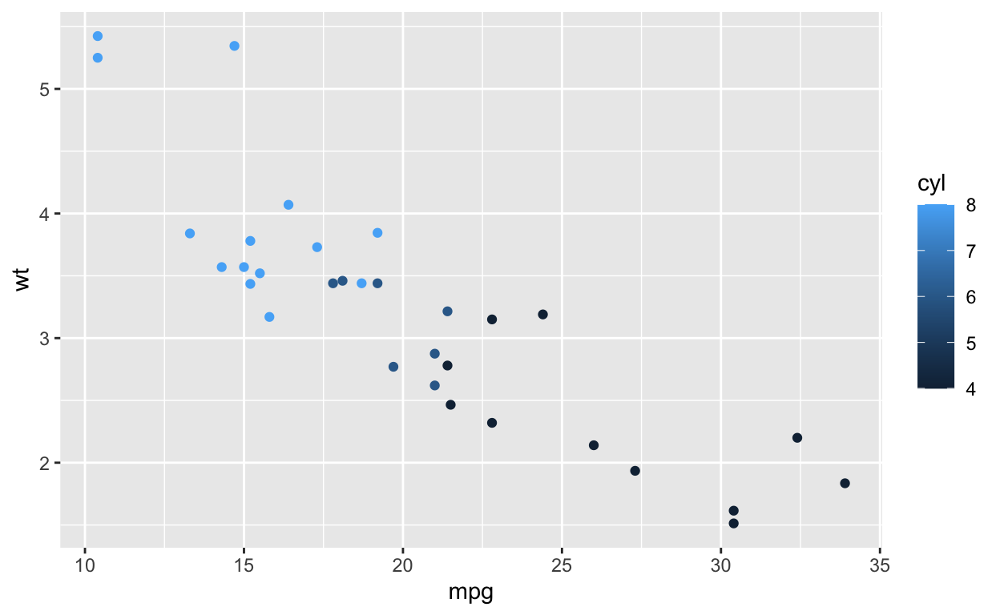
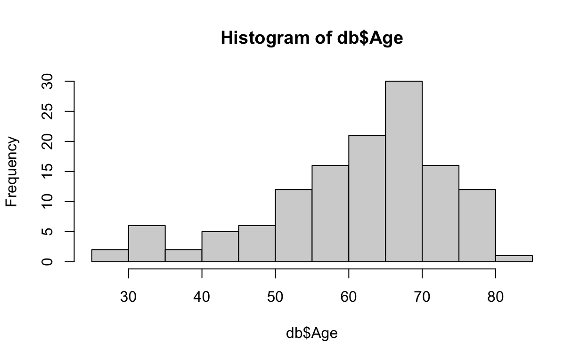
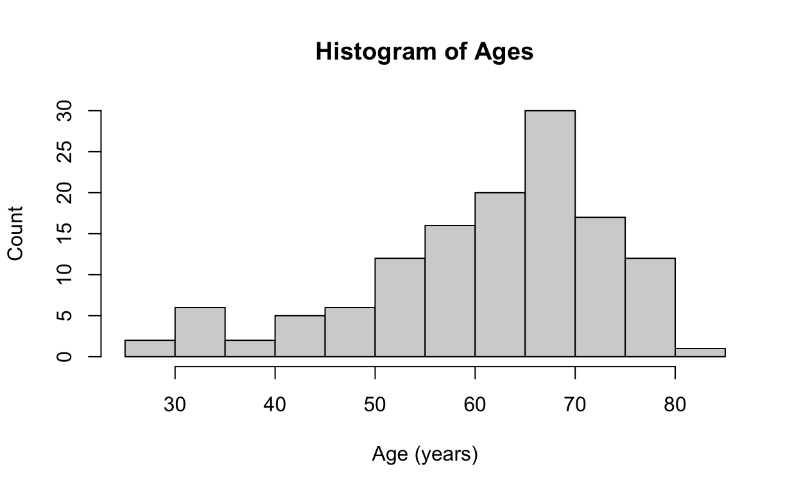
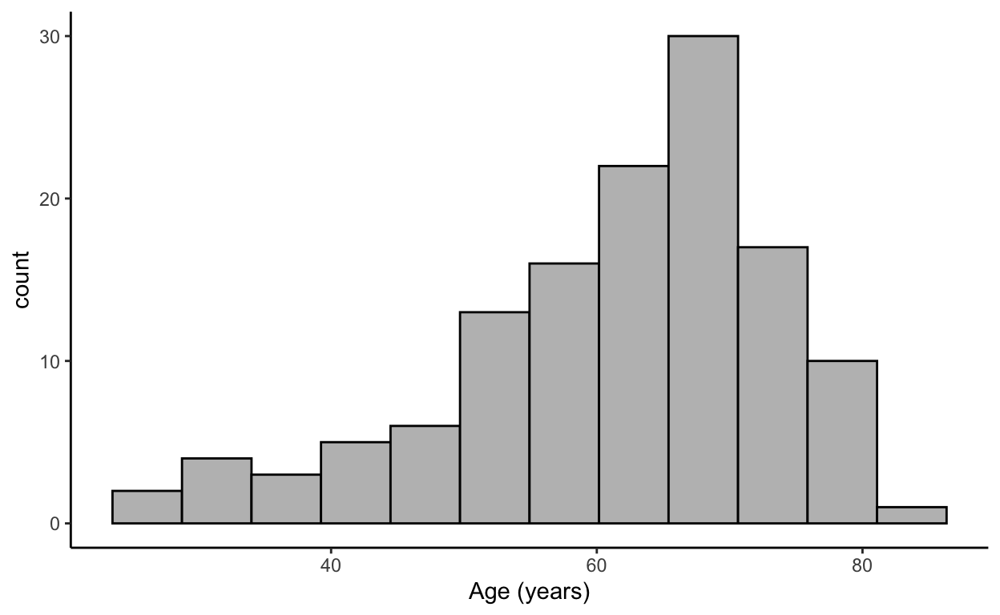
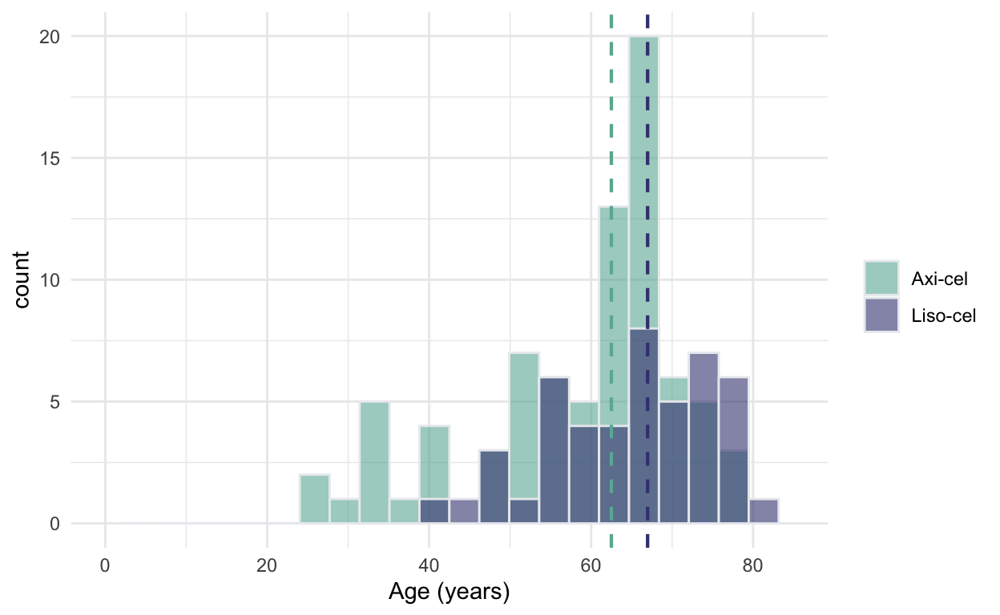
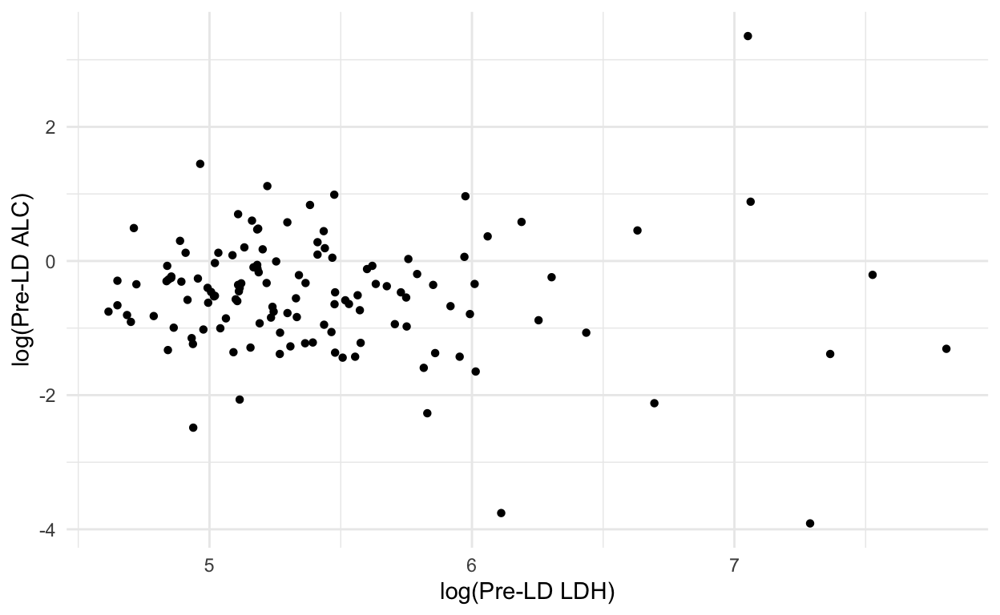
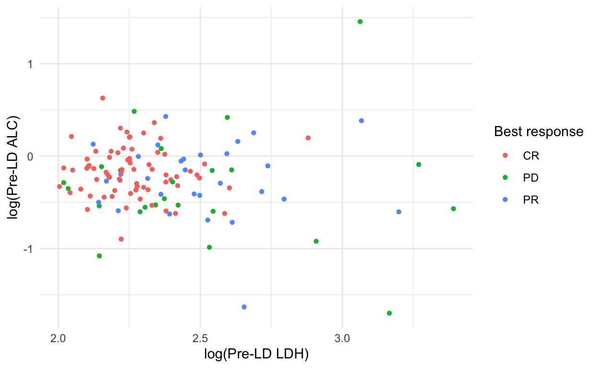

In the first session, you’ll learn how to install R and RStudio, create and work with an R Markdown file, install and load critical libraries, and generate summary tables and histograms.
NOTE: For Windows users with a Fred Hutch issued computer, RStudio must be installed via the Self Service application.
install.packages("readxl")install.packages("gtsummary")install.packages("ggplot2")install.packages("dplyr")## This is a chunk.
## Code can be placed inside here.
## You can silence warnings and messages: {r, warning=FALSE, message=FALSE}
## You can prevent code from being executed: {r, eval=FALSE}quickplot(x = mpg, y = wt, data = mtcars, colour = cyl)
EXERCISE: Can you convert miles per gallon to kilometers per gallon? (1 mile = 1.6 km)
db = read.csv(file="sample.data.csv",header = TRUE, sep = ",") ## Read the csv file into a dataframeEXERCISE: First place the data file in the same folder as your R markdown file, and read it in. Next, try placing the data file on your desktop and navigating to it. For example: “/Users/aportugu/Desktop/sample.data.xlsx”
EXERCISE: Use the head() function to look at the first few patients in the dataset
db = read_excel(path="sample.data.xlsx")NOTE: for dates to read in correctly, there CANNOT be any “NA” entries
theme_gtsummary_compact() ## Set table theme to compact for better readability
## Table data creation:
## Transform and select specific columns from the database ("db") to include in the table.
## Use the %>% operator to pipe the database ("db") into the transmute function.
## Use the <- operator to assign the transformed "db" to a temporary dataframe
temp.table.data <- db %>%
transmute( ## Use the transmute() function to make readable variable names for the table.
"Age (years)" = Age,
"Male sex" = ifelse(Sex == "M", "Yes","No"), ## Use the ifelse() function to adjust the Sex
"HCT-CI" = HCT.CI,
"Disease subtype" = Disease,
"Largest lesion (cm)" = Largest.lesion,
"Bulky (\u22655 cm)" = ifelse(Bulky == 1, "Yes","No"),
"Product" = CAR.T.Product.Type
)
## Table creation:
## Use the %>% operator to pipe the temporary data frame into the tbl_summary() function,
## which is the main function in "gtsummary" for creating summary tables.
temp.table.data %>%
tbl_summary(
missing = "no", ## Ensures that missing data is not included in the table
type = c("HCT-CI" = "continuous"), ## Specifies that HCT-CI should be treated as a continuous variable
statistic = list(
all_continuous() ~ "{median} ({p25}, {p75})", ## Continuous variables are described as median with IQR
all_categorical() ~ "{n} ({p}%)", ## Categorical variables are counted and given a percentage
"Age (years)" ~"{median} ({min} to {max})" ## Age (a continuous variable) is listed as median with min to max
)
) %>%
bold_labels %>% ## Used to make the variable names bold in the table
add_stat_label() ## Used to add the statistical summaries ot the table (i.e., median with IQR)| Characteristic | N = 129 |
|---|---|
| Age (years), Median (Range) | 64 (26 to 83) |
| Male sex, n (%) | 86 (67%) |
| HCT-CI, Median (IQR) | 1.00 (1.00, 3.00) |
| Disease subtype, n (%) | |
| DLBCL | 95 (74%) |
| HGBCL | 6 (4.7%) |
| PMBCL | 2 (1.6%) |
| TCHRLBCL | 1 (0.8%) |
| tDLBCL | 25 (19%) |
| Largest lesion (cm), Median (IQR) | 3.0 (1.6, 5.6) |
| Bulky (≥5 cm), n (%) | 40 (31%) |
| Product, n (%) | |
| Breyanzi | 48 (37%) |
| Yescarta | 81 (63%) |
EXERCISE 1: Add “Extranodal” disease (yes vs no) to the data table.
EXERCISE 2: Change the CAR.T.Product.Type from brand name to generic (i.e., Breyanzi -> Liso-cel, Yescarta -> Axi-cel) using the recode() function.
EXERCISE 3: Use the factor(x, levels = c(a, b)) function to re-order the Product in the table.
theme_gtsummary_compact() ## Set table theme to compact
db %>% ## Create the characteristics you want to include in your table.
transmute(
"Age (years)" = Age,
"Male sex" = ifelse(Sex == "M", "Yes","No"),
"HCT-CI" = HCT.CI,
"Disease subtype" = Disease,
"Largest lesion (cm)" = Largest.lesion,
"Bulky (\u22655 cm)" = ifelse(Bulky == 1, "Yes","No"),
"Extranodal" = ifelse(Extranodal == 1, "Yes","No"),
"Product" = recode(CAR.T.Product.Type, "Breyanzi"= "Liso-cel", "Yescarta" = "Axi-cel")
) %>% ## Make your table
tbl_summary(
by = "Product",
missing = "no",
type = c("HCT-CI" = "continuous"),
statistic = list(
all_continuous() ~ "{median} ({p25}, {p75})", ## Continuous variables are described as median with IQR
all_categorical() ~ "{n} ({p}%)", ## Categorical variables are counted and given a percentage
"Age (years)" ~"{median} ({min} to {max})" ## Age (a continuous variable) is listed as median with min to max
)
) %>%
bold_labels %>% ## Add bold labels
add_stat_label() ## Add the statistic (i.e., median with IQR)| Characteristic | Axi-cel, N = 81 | Liso-cel, N = 48 |
|---|---|---|
| Age (years), Median (Range) | 62 (26 to 79) | 67 (41 to 83) |
| Male sex, n (%) | 56 (69%) | 30 (63%) |
| HCT-CI, Median (IQR) | 1.00 (1.00, 3.00) | 1.00 (1.00, 3.25) |
| Disease subtype, n (%) | ||
| DLBCL | 59 (73%) | 36 (75%) |
| HGBCL | 3 (3.7%) | 3 (6.3%) |
| PMBCL | 2 (2.5%) | 0 (0%) |
| TCHRLBCL | 1 (1.2%) | 0 (0%) |
| tDLBCL | 16 (20%) | 9 (19%) |
| Largest lesion (cm), Median (IQR) | 3.0 (2.0, 6.5) | 3.1 (1.3, 5.2) |
| Bulky (≥5 cm), n (%) | 27 (33%) | 13 (27%) |
| Extranodal, n (%) | 45 (56%) | 27 (56%) |
EXERCISE: Stratify the summary table by (1) sex and (2) age <65 vs >=65.
theme_gtsummary_compact() ## Set table theme to compact
db %>% ## Create the characteristics you want to include in your table.
transmute(
"Age (years)" = Age,
"Male sex" = ifelse(Sex == "M", "Yes","No"),
"HCT-CI" = HCT.CI,
"Disease subtype" = Disease,
"Largest lesion (cm)" = Largest.lesion,
"Bulky (\u22655 cm)" = ifelse(Bulky == 1, "Yes","No"),
"Extranodal" = ifelse(Extranodal == 1, "Yes","No"),
"Product" = factor(recode(CAR.T.Product.Type, "Breyanzi"= "Liso-cel", "Yescarta" = "Axi-cel"), levels = c("Liso-cel","Axi-cel"))
) %>% ## Make your table
tbl_summary(
by = "Product",
missing = "no",
type = c("HCT-CI" = "continuous"),
statistic = list(
all_continuous() ~ "{median} ({p25}, {p75})", ## Continuous variables are described as median with IQR
all_categorical() ~ "{n} ({p}%)", ## Categorical variables are counted and given a percentage
"Age (years)" ~"{median} ({min} to {max})" ## Age (a continuous variable) is listed as median with min to max
)
) %>%
bold_labels %>%
add_p() %>%
add_stat_label()| Characteristic | Liso-cel, N = 48 | Axi-cel, N = 81 | p-value1 |
|---|---|---|---|
| Age (years), Median (Range) | 67 (41 to 83) | 62 (26 to 79) | 0.004 |
| Male sex, n (%) | 30 (63%) | 56 (69%) | 0.4 |
| HCT-CI, Median (IQR) | 1.00 (1.00, 3.25) | 1.00 (1.00, 3.00) | 0.6 |
| Disease subtype, n (%) | 0.9 | ||
| DLBCL | 36 (75%) | 59 (73%) | |
| HGBCL | 3 (6.3%) | 3 (3.7%) | |
| PMBCL | 0 (0%) | 2 (2.5%) | |
| TCHRLBCL | 0 (0%) | 1 (1.2%) | |
| tDLBCL | 9 (19%) | 16 (20%) | |
| Largest lesion (cm), Median (IQR) | 3.1 (1.3, 5.2) | 3.0 (2.0, 6.5) | 0.4 |
| Bulky (≥5 cm), n (%) | 13 (27%) | 27 (33%) | 0.5 |
| Extranodal, n (%) | 27 (56%) | 45 (56%) | >0.9 |
| 1 Wilcoxon rank sum test; Pearson’s Chi-squared test; Fisher’s exact test | |||
EXERCISE: Instead of stratifying by product type, stratify by age <65 vs >=65 years.
hist(db$Age) ## Use the hist function
EXERCISE: Make a simple histogram of vein-to-vein time (vv.time)
hist(db$Age,
main = "Histogram of Ages",
xlab = "Age (years)",
ylab = "Count")
EXERCISE: Can you change the age to months and adjust the axis label accordingly?
db %>%
ggplot( aes(x=Age)) + ## Pass the Ages as an aesthetic mapping to the ggplot function
geom_histogram(fill = "gray", color="black", bins = 12) + ## Plot a histogram
theme_classic() + ## Use a classic theme
xlab("Age (years)") ## Label the x axis
EXERCISE: Change the y-axis label to be “Number of patients”
EXERCISE: Try increasing the number of bins
db %>%
mutate(
CAR.T.Product.Type = recode(CAR.T.Product.Type,"Breyanzi" = "Liso-cel","Yescarta" = "Axi-cel")
)%>% ## Recode the product type by the generic names
ggplot( aes(x=Age, fill=CAR.T.Product.Type) ) + ## Fill in
geom_histogram( color="#e9ecef", alpha=0.6, position = 'identity', bins = 24) +
scale_fill_manual(values=c("#69b3a2", "#404080")) +
theme_minimal() +
labs(fill="") +
xlim(0, 85)+ ## Set the limits of the histogram x axis
xlab("Age (years)")EXERCISE: Try out different ggplot themes. The fully list can be found here: https://ggplot2.tidyverse.org/reference/ggtheme.html
db %>%
mutate(
CAR.T.Product.Type = recode(CAR.T.Product.Type,"Breyanzi" = "Liso-cel","Yescarta" = "Axi-cel")
)%>% ## Recode the product type by the generic names
ggplot( aes(x=Age, fill=CAR.T.Product.Type) ) + ## Fill in
geom_histogram( color="#e9ecef", alpha=0.6, position = 'identity', bins = 24) +
scale_fill_manual(values=c("#69b3a2", "#404080")) +
theme_minimal() +
labs(fill="") +
geom_vline(aes(xintercept = median(as.numeric(filter(db, CAR.T.Product.Type == "Yescarta")$Age))),
linetype = "dashed", color = "#69b3a2", linewidth = 0.75)+
xlim(0, 85)+ ## Set the limits of the histogram x axis
xlab("Age (years)")
EXERCISE: Add the median line for Liso-cel (Breyanzi).
## The ggplot comamnd sets up the initial ggplot object, specifying the data frame "db" and the aesthetics (variables for x and y axes)
ggplot(db, aes(x=log(LDH.preLD), y = log(ALC.preLD))) +
geom_point(shape = 16) + # Add points to the plot with shape 16 (i.e., basic circle)
theme_minimal() + # Use the minimal theme
labs(x = "log(Pre-LD LDH)", y = "log(Pre-LD ALC)") # Add x- and y-axis labels
EXERCISE: Explore different geom_point shapes (Google search “geom_point shapes”) and sizes (i.e., size = 4)
## Add a 3rd aesthetic, "color," for the data points
ggplot(db, aes(x=log10(LDH.preLD), y = log10(ALC.preLD), color = Best.response )) +
geom_point(shape = 16) +
theme_minimal() +
labs(x = "log(Pre-LD LDH)", y = "log(Pre-LD ALC)", color = "Best response") # Add a legend label
install.packages("plotly")